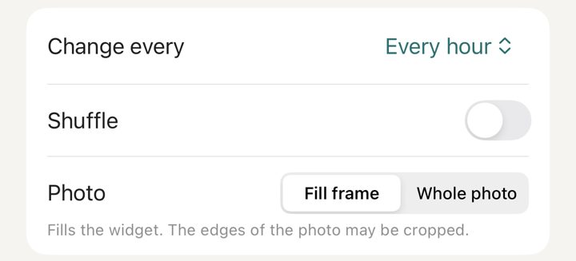

Mantel · Hướng dẫn · 日本語 · Português
Tiện ích có hình dạng cố định. Còn ảnh của bạn thì thường không. Khi hai thứ không khớp, tiện ích phải cắt bớt — và với ảnh chân dung, phần bị cắt thường là đỉnh đầu hoặc người đứng ở mép ảnh.
Trong Mantel có hai cách để khắc phục. Cả hai đều miễn phí.
Tiện ích cỡ Nhỏ có hình vuông. Hầu hết ảnh iPhone có tỉ lệ 3:4 dọc hoặc 4:3 ngang. Để lấp đầy hình vuông, một phần ảnh phải bị bỏ đi. Mặc định, phần cắt được lấy từ giữa ảnh, nên khuôn mặt ở gần phía trên hoặc hai bên có thể nằm ngoài khung.
Phù hợp khi bạn muốn tiện ích lấp đầy đến tận mép, nhưng lấy khuôn mặt làm tâm.
Bạn có thể đặt một chỗ khác cho từng ảnh. Để quay về giữa, chạm “Về giữa”.
Phù hợp khi không phần nào trong ảnh được phép bị cắt — ảnh chụp nhóm, hoặc ảnh có chữ.

Tiện ích hiện toàn bộ tấm ảnh mà không cắt, với một khoảng viền nhỏ xung quanh. Cài đặt này áp dụng cho mọi ảnh trong bộ. “Lấp đầy khung” sẽ chuyển lại về chế độ lấp đầy tiện ích.
Không thuê bao, không quảng cáo, không cần tài khoản. · Giới thiệu Mantel · Cách dùng & FAQ
English · 日本語 · 简体中文 · 繁體中文 · 한국어 · Deutsch · Français · Español · Italiano · Nederlands · Polski · Português · Русский · ไทย · Türkçe · Українська · Tiếng Việt · Bahasa Indonesia